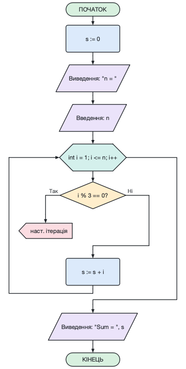

Команда Файл → Імпорт з вихідного коду (Ctrl+I) відкриває вікно, у яке можна вставити код мовою C або C++ або відкрити файл (.c, .cpp, .h ...). Файл можна також просто перетягнути у вікно програми.
Праворуч одразу показується блок-схема вибраної функції. Кнопка Імпортувати відкриває її в новій вкладці, Імпортувати всі функції — кожну функцію у своїй вкладці.
Розпізнаються: if/else, switch, while, do-while, for (зокрема range-for), return, break, continue, присвоєння, введення/виведення (scanf, printf, puts, gets, cin, cout, getline), виклики функцій. Функції шукаються й усередині класів і просторів імен.
Параметри імпорту: вигляд циклів for (блок у стилі C, цикл «поки» або цикл із лічильником), збереження оголошень змінних, розпізнавання введення/виведення, виклики як блоки підпрограм, розгортання складених присвоєнь (x += 2 → x := x + 2).
Те, що не можна показати на блок-схемі (goto, обробники винятків, директиви препроцесора), перелічується у списку повідомлень; подвійне клацання по повідомленню показує рядок коду.
З командного рядка: afce --import prog.c --function main або afce-cli import prog.c --output prog.afc.
